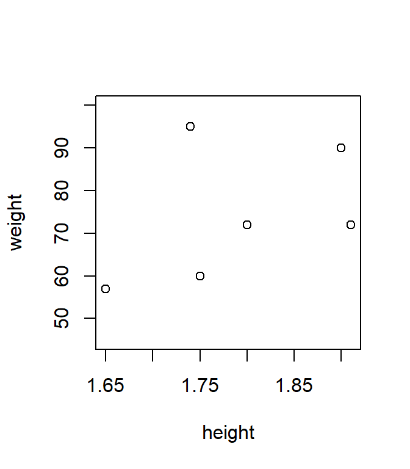

Chapter 1 Day 1
1.1 Some initial thoughts
R is a programming language and it takes a while to learn it. It also takes some practice that you will only get while using it – daily if possible. It is also helpful to read through at least one book about R. Here are some suggestions:
- Navarro, D. (2013). Learning statistics with R. Lulu. com. https://learningstatisticswithr.com/book/
- Long, J. D., & Teetor, P. (2019). R Cookbook: Proven recipes for data analysis, statistics, and graphics. 2nd edition. O’Reilly. https://rc2e.com/
- Grolemund, G. (2014). Hands-on programming with R. Write your own functions and simulations. O’Reilly. https://rstudio-education.github.io/hopr/
- Wickham, H., & Grolemund, G. (2016). R for data science: import, tidy, transform, visualize, and model data (First edition). O’Reilly. http://r4ds.had.co.nz/
- Wickham, H. (2019). Advanced R. CRC press. https://adv-r.hadley.nz/
1.2 Let’s get started
Let us first open an R console. What R version is installed on your system? If it is an old version, you should consider to update it.
version## _
## platform x86_64-w64-mingw32
## arch x86_64
## os mingw32
## crt ucrt
## system x86_64, mingw32
## status
## major 4
## minor 3.3
## year 2024
## month 02
## day 29
## svn rev 86002
## language R
## version.string R version 4.3.3 (2024-02-29 ucrt)
## nickname Angel Food CakeYou can close R be typing q(). It will ask you, if you want to save the
workspace image. Always answer no. This can also be done by saying q(save = "no"). In RStudio you might want to go to Tools -> Global Options and then
remove the ticks for “Restore .RData into workspace at startup” and “Always
save history”. You can also set “Save workspace to .Rdata on exit: Never”.
R has an extensive help system. Type ?<function_name> or
help(<function_name>) in order to see the documentation for each function. If
you are not sure what the function was called use ??<search_term>. Typing
help.start() into your R console, opens up inbuilt manuals and FAQ sites.
1.3 R as calculator
R is an interactive environment. You can simply use it as a calculator.
2 + 2## [1] 43 - 7## [1] -42 * 2## [1] 44^2 # or 4**2## [1] 165 / 4## [1] 1.25log(3)## [1] 1.098612exp(1)## [1] 2.718282In longer equations you can use brackets.
sqrt(2) * ((5 - 1/6)^2 - pi/2^(1/3))## [1] 29.511281.4 Creating variables
You can store results in a variable using the <- operator.
x <- sqrt(2)
y <- x^2
ls()## [1] "x" "y"# rm(list = ls()) # deletes all user defined objectsVariable names cannot start with a number. But you can add numbers after a
letter, e.g., x1 and x2.
1.5 Data types
1.5.1 Vectors
Vectors can be created with the concatenate (or combine) function c().
x <- c(6, 3, 2, 8)
x## [1] 6 3 2 8You can use mathematical operations element wise on a vector.
mean(x)## [1] 4.75x + 2## [1] 8 5 4 10sqrt(x)## [1] 2.449490 1.732051 1.414214 2.828427y <- c(2, 4)
x + y # shorter vector is "recycled" or "broadcasted"## [1] 8 7 4 12x + rep(y, 2)## [1] 8 7 4 121.5.1.1 Creating vectors
Vectors can be created in different ways. All objects within one vector must be of the same type. If they are not, R automatically converts all elements to the most general type.
Often used types of vectors are
- character vectors with their elements in quotation marks
- logical vectors with values
TRUE,FALSEandNA(missing values indicated byNA)
You can check the type with class() or typeof().
c("a", "b", "c", 4, 7.7)## [1] "a" "b" "c" "4" "7.7"seq(1, 2, .1)## [1] 1.0 1.1 1.2 1.3 1.4 1.5 1.6 1.7 1.8 1.9 2.0seq(1, 2, length.out = 10)## [1] 1.000000 1.111111 1.222222 1.333333 1.444444 1.555556 1.666667 1.777778 1.888889
## [10] 2.000000seq(from = 1, to = 5, by = 1)## [1] 1 2 3 4 5seq(1, 4, along.with = x)## [1] 1 2 3 41:10## [1] 1 2 3 4 5 6 7 8 9 10-5:5## [1] -5 -4 -3 -2 -1 0 1 2 3 4 5rep(1:5, 2)## [1] 1 2 3 4 5 1 2 3 4 5rep(c("a", "b", "c"), each = 3)## [1] "a" "a" "a" "b" "b" "b" "c" "c" "c"rep(c("a", "b", "c"), c(2, 4, 6))## [1] "a" "a" "b" "b" "b" "b" "c" "c" "c" "c" "c" "c"table(rep(c("a", "b", "c"), c(2, 4, 6)))##
## a b c
## 2 4 6rep(1:4, each = 2, times = 3) # length 24, 3 complete replications## [1] 1 1 2 2 3 3 4 4 1 1 2 2 3 3 4 4 1 1 2 2 3 3 4 4rep(rep(1:4, each = 2), 3) # more complicated way## [1] 1 1 2 2 3 3 4 4 1 1 2 2 3 3 4 4 1 1 2 2 3 3 4 4paste("subj", 1:10, sep = "_")## [1] "subj_1" "subj_2" "subj_3" "subj_4" "subj_5" "subj_6" "subj_7" "subj_8"
## [9] "subj_9" "subj_10"weight <- c(60, 72, 57, 90, 95, 72)
height <- c(1.75, 1.80, 1.65, 1.90, 1.74, 1.91)
plot(height, weight, ylim = c(45, 100))
# logical vectors
c(TRUE, FALSE, FALSE, TRUE)## [1] TRUE FALSE FALSE TRUEweight > 60## [1] FALSE TRUE FALSE TRUE TRUE TRUEsum(weight > 60)## [1] 4mean(weight > 60)## [1] 0.6666667Factors are data structures for categorical variables, such as diagnosis, socio-economic status, sex, etc.
ses <- factor(c("low", "inter", "high"))
ses## [1] low inter high
## Levels: high inter lowses2 <- factor(ses, levels = c("low", "inter", "high"))
ses2## [1] low inter high
## Levels: low inter highfactor(rep(1:2, each = 10), labels = c("on", "of"))## [1] on on on on on on on on on on of of of of of of of of of of
## Levels: on of# sort factor levels
l <- paste(c("subj", "cond"), rep(1:10, each = 2), sep = "_")
f <- factor(l, levels = l)
f## [1] subj_1 cond_1 subj_2 cond_2 subj_3 cond_3 subj_4 cond_4 subj_5 cond_5 subj_6
## [12] cond_6 subj_7 cond_7 subj_8 cond_8 subj_9 cond_9 subj_10 cond_10
## 20 Levels: subj_1 cond_1 subj_2 cond_2 subj_3 cond_3 subj_4 cond_4 subj_5 cond_5 ... cond_101.5.2 Matrices
R offers multiple functionalities to work with matrices.
A <- matrix(1:12, nrow = 3, ncol = 4, byrow = TRUE)
A## [,1] [,2] [,3] [,4]
## [1,] 1 2 3 4
## [2,] 5 6 7 8
## [3,] 9 10 11 12rownames(A) <- c("a1", "a2", "a3")
t(A)## a1 a2 a3
## [1,] 1 5 9
## [2,] 2 6 10
## [3,] 3 7 11
## [4,] 4 8 12diag(A)## [1] 1 6 11diag(6)## [,1] [,2] [,3] [,4] [,5] [,6]
## [1,] 1 0 0 0 0 0
## [2,] 0 1 0 0 0 0
## [3,] 0 0 1 0 0 0
## [4,] 0 0 0 1 0 0
## [5,] 0 0 0 0 1 0
## [6,] 0 0 0 0 0 1diag(c(3, 5, 7))## [,1] [,2] [,3]
## [1,] 3 0 0
## [2,] 0 5 0
## [3,] 0 0 7cbind(a1 = 1:4, a2 = 5:8, a3 = 9:12)## a1 a2 a3
## [1,] 1 5 9
## [2,] 2 6 10
## [3,] 3 7 11
## [4,] 4 8 12rbind(a1 = 1:4, a2 = 5:8, a3 = 9:12)## [,1] [,2] [,3] [,4]
## a1 1 2 3 4
## a2 5 6 7 8
## a3 9 10 11 125 * A## [,1] [,2] [,3] [,4]
## a1 5 10 15 20
## a2 25 30 35 40
## a3 45 50 55 60B <- t(A)
B %*% A## [,1] [,2] [,3] [,4]
## [1,] 107 122 137 152
## [2,] 122 140 158 176
## [3,] 137 158 179 200
## [4,] 152 176 200 224Arrays are data structures having more than two dimensions.
array(c(A, 2 * A), c(3, 4, 2))## , , 1
##
## [,1] [,2] [,3] [,4]
## [1,] 1 2 3 4
## [2,] 5 6 7 8
## [3,] 9 10 11 12
##
## , , 2
##
## [,1] [,2] [,3] [,4]
## [1,] 2 4 6 8
## [2,] 10 12 14 16
## [3,] 18 20 22 241.5.3 Lists
If it is necessary to store different types of R objects into a single data structure, we need a list.
list1 <- list(w = weight, h = height, s = ses2, A = A)
list1## $w
## [1] 60 72 57 90 95 72
##
## $h
## [1] 1.75 1.80 1.65 1.90 1.74 1.91
##
## $s
## [1] low inter high
## Levels: low inter high
##
## $A
## [,1] [,2] [,3] [,4]
## a1 1 2 3 4
## a2 5 6 7 8
## a3 9 10 11 12list1$A## [,1] [,2] [,3] [,4]
## a1 1 2 3 4
## a2 5 6 7 8
## a3 9 10 11 12list1[[2]]## [1] 1.75 1.80 1.65 1.90 1.74 1.911.5.4 Data frames
Data frames are the fundamental data structure in R. Data frames are lists with the restriction that all list elements (column vectors) have the same length. The rows in a data frame refer to one unit (observation or subject).
id <- factor(paste("s", 1:6, sep = ""))
dat <- data.frame(id, weight, height)
dat## id weight height
## 1 s1 60 1.75
## 2 s2 72 1.80
## 3 s3 57 1.65
## 4 s4 90 1.90
## 5 s5 95 1.74
## 6 s6 72 1.91dat$id## [1] s1 s2 s3 s4 s5 s6
## Levels: s1 s2 s3 s4 s5 s6Frequently used functions (not only) for data frames are
dim(dat) # show number of rows and columns## [1] 6 3names(dat) # variable names## [1] "id" "weight" "height"plot(dat) # pairwise plots
str(dat) # show variables of dat## 'data.frame': 6 obs. of 3 variables:
## $ id : Factor w/ 6 levels "s1","s2","s3",..: 1 2 3 4 5 6
## $ weight: num 60 72 57 90 95 72
## $ height: num 1.75 1.8 1.65 1.9 1.74 1.91summary(dat) # descriptive statistics## id weight height
## s1:1 Min. :57.00 Min. :1.650
## s2:1 1st Qu.:63.00 1st Qu.:1.742
## s3:1 Median :72.00 Median :1.775
## s4:1 Mean :74.33 Mean :1.792
## s5:1 3rd Qu.:85.50 3rd Qu.:1.875
## s6:1 Max. :95.00 Max. :1.9101.6 Indexing
1.6.1 Indexing vectors
Elements of a vector can be accessed using [] (see ?Extract).
weight[4]## [1] 90weight[4] <- 92
weight[c(1, 2, 6)]## [1] 60 72 72weight[1:5]## [1] 60 72 57 92 95weight[-3]## [1] 60 72 92 95 72Indices may be logical.
weight[weight > 60] # values greater than 60## [1] 72 92 95 72weight[weight > 60 & weight < 80] # between 60 and 80## [1] 72 72height[weight > 60 & weight < 80]## [1] 1.80 1.911.6.2 Indexing data frames
Data frames have a row and a column index. Omitting one index selects all rows or columns, respectively.
dat[3, 2] # 3rd row, 2nd column## [1] 57dat[1:4, ] # rows 1 to 4, all columns## id weight height
## 1 s1 60 1.75
## 2 s2 72 1.80
## 3 s3 57 1.65
## 4 s4 90 1.90dat[, 3] # all rows, 3rd column## [1] 1.75 1.80 1.65 1.90 1.74 1.91dat[dat$id == "s2", ] # all observations of s2## id weight height
## 2 s2 72 1.8dat[dat$weight > 60, ] # all observations above 60kg## id weight height
## 2 s2 72 1.80
## 4 s4 90 1.90
## 5 s5 95 1.74
## 6 s6 72 1.911.7 Calling functions
In R everything is a function. Functions consist of
- a name
- a pair of brackets
- the arguments (none, one, or more)
- a return value (visible, invisible, NULL).
Functions can be called either with positional or with keyword matching.
# Keyword matching
plot(y = weight, x = height, pch = 16, col = "blue")# Positional matching
plot(height, weight)# see ?plot.default
# Mixed
plot(height, weight, pch = 16, col = "blue")Another way to call functions is to use pipes. Pipes are sometimes useful to not store intermediate objects. Sometimes they are better “readable”.
dat |> plot(weight ~ height, data = _)1.8 Useful functions
set.seed(1124) # set seed for reproducibility
dat2 <- data.frame(
id = rep(paste0("subj", 1:10), each = 2),
cond = factor(rep(c("c1", "c2"), each = 10)),
time = factor(c("t1", "t2")),
iqscore = rnorm(20, mean = 100, sd = 15)
)
dat2## id cond time iqscore
## 1 subj1 c1 t1 104.50714
## 2 subj1 c1 t2 74.84047
## 3 subj2 c1 t1 78.13192
## 4 subj2 c1 t2 100.21989
## 5 subj3 c1 t1 115.99902
## 6 subj3 c1 t2 105.75139
## 7 subj4 c1 t1 92.50256
## 8 subj4 c1 t2 105.19623
## 9 subj5 c1 t1 98.27768
## 10 subj5 c1 t2 102.94239
## 11 subj6 c2 t1 128.22955
## 12 subj6 c2 t2 109.66484
## 13 subj7 c2 t1 96.73849
## 14 subj7 c2 t2 97.51510
## 15 subj8 c2 t1 115.96479
## 16 subj8 c2 t2 86.68053
## 17 subj9 c2 t1 98.28299
## 18 subj9 c2 t2 114.95694
## 19 subj10 c2 t1 82.90272
## 20 subj10 c2 t2 96.77230In R, data from different distributions can be randomly generated. See
?Distributions for a list of the distributions inbuilt in the stats
package. All of them follow the same schema: there is a root name (norm
for the normal distribution); one can get density values for a certain
range with dnorm(), quantiles for certain probability values with
qnorm(), probability values for certain quantiles with pnorm() and
random numbers drawn from the distribution with rnorm().
# calculating correlation
t1 <- dat2[dat2$time == "t1", "iqscore"]
t2 <- dat2[dat2$time == "t2", "iqscore"]
cor.test( ~ t1 + t2)##
## Pearson's product-moment correlation
##
## data: t1 and t2
## t = 0.059322, df = 8, p-value = 0.9542
## alternative hypothesis: true correlation is not equal to 0
## 95 percent confidence interval:
## -0.6168009 0.6421175
## sample estimates:
## cor
## 0.020968751.8.1 Function reshape()
dat2[order(dat2$time), ] # sort by time## id cond time iqscore
## 1 subj1 c1 t1 104.50714
## 3 subj2 c1 t1 78.13192
## 5 subj3 c1 t1 115.99902
## 7 subj4 c1 t1 92.50256
## 9 subj5 c1 t1 98.27768
## 11 subj6 c2 t1 128.22955
## 13 subj7 c2 t1 96.73849
## 15 subj8 c2 t1 115.96479
## 17 subj9 c2 t1 98.28299
## 19 subj10 c2 t1 82.90272
## 2 subj1 c1 t2 74.84047
## 4 subj2 c1 t2 100.21989
## 6 subj3 c1 t2 105.75139
## 8 subj4 c1 t2 105.19623
## 10 subj5 c1 t2 102.94239
## 12 subj6 c2 t2 109.66484
## 14 subj7 c2 t2 97.51510
## 16 subj8 c2 t2 86.68053
## 18 subj9 c2 t2 114.95694
## 20 subj10 c2 t2 96.77230datw <- reshape(dat2, direction = "wide", idvar = c("id", "cond"),
timevar = "time")
names(datw)[3:4] <- c("t1", "t2")
cor.test( ~ t1 + t2, datw)##
## Pearson's product-moment correlation
##
## data: t1 and t2
## t = 0.059322, df = 8, p-value = 0.9542
## alternative hypothesis: true correlation is not equal to 0
## 95 percent confidence interval:
## -0.6168009 0.6421175
## sample estimates:
## cor
## 0.02096875reshape(datw, direction = "long", varying = 3:4, idvar = "id", v.names = "iqscore",
times = c("t1", "t2"))## id cond time iqscore
## subj1.t1 subj1 c1 t1 104.50714
## subj2.t1 subj2 c1 t1 78.13192
## subj3.t1 subj3 c1 t1 115.99902
## subj4.t1 subj4 c1 t1 92.50256
## subj5.t1 subj5 c1 t1 98.27768
## subj6.t1 subj6 c2 t1 128.22955
## subj7.t1 subj7 c2 t1 96.73849
## subj8.t1 subj8 c2 t1 115.96479
## subj9.t1 subj9 c2 t1 98.28299
## subj10.t1 subj10 c2 t1 82.90272
## subj1.t2 subj1 c1 t2 74.84047
## subj2.t2 subj2 c1 t2 100.21989
## subj3.t2 subj3 c1 t2 105.75139
## subj4.t2 subj4 c1 t2 105.19623
## subj5.t2 subj5 c1 t2 102.94239
## subj6.t2 subj6 c2 t2 109.66484
## subj7.t2 subj7 c2 t2 97.51510
## subj8.t2 subj8 c2 t2 86.68053
## subj9.t2 subj9 c2 t2 114.95694
## subj10.t2 subj10 c2 t2 96.77230reshape(datw, direction = "long", varying = c("t1", "t2"), idvar = "id",
v.names = "iqscore", times = c("t1", "t2"))## id cond time iqscore
## subj1.t1 subj1 c1 t1 104.50714
## subj2.t1 subj2 c1 t1 78.13192
## subj3.t1 subj3 c1 t1 115.99902
## subj4.t1 subj4 c1 t1 92.50256
## subj5.t1 subj5 c1 t1 98.27768
## subj6.t1 subj6 c2 t1 128.22955
## subj7.t1 subj7 c2 t1 96.73849
## subj8.t1 subj8 c2 t1 115.96479
## subj9.t1 subj9 c2 t1 98.28299
## subj10.t1 subj10 c2 t1 82.90272
## subj1.t2 subj1 c1 t2 74.84047
## subj2.t2 subj2 c1 t2 100.21989
## subj3.t2 subj3 c1 t2 105.75139
## subj4.t2 subj4 c1 t2 105.19623
## subj5.t2 subj5 c1 t2 102.94239
## subj6.t2 subj6 c2 t2 109.66484
## subj7.t2 subj7 c2 t2 97.51510
## subj8.t2 subj8 c2 t2 86.68053
## subj9.t2 subj9 c2 t2 114.95694
## subj10.t2 subj10 c2 t2 96.77230datl <- reshape(datw, direction = "long", varying = c("t1", "t2"), idvar = "id",
v.names = "iqscore", times = c("t1", "t2"))
datl[order(datl$id), ]## id cond time iqscore
## subj1.t1 subj1 c1 t1 104.50714
## subj1.t2 subj1 c1 t2 74.84047
## subj10.t1 subj10 c2 t1 82.90272
## subj10.t2 subj10 c2 t2 96.77230
## subj2.t1 subj2 c1 t1 78.13192
## subj2.t2 subj2 c1 t2 100.21989
## subj3.t1 subj3 c1 t1 115.99902
## subj3.t2 subj3 c1 t2 105.75139
## subj4.t1 subj4 c1 t1 92.50256
## subj4.t2 subj4 c1 t2 105.19623
## subj5.t1 subj5 c1 t1 98.27768
## subj5.t2 subj5 c1 t2 102.94239
## subj6.t1 subj6 c2 t1 128.22955
## subj6.t2 subj6 c2 t2 109.66484
## subj7.t1 subj7 c2 t1 96.73849
## subj7.t2 subj7 c2 t2 97.51510
## subj8.t1 subj8 c2 t1 115.96479
## subj8.t2 subj8 c2 t2 86.68053
## subj9.t1 subj9 c2 t1 98.28299
## subj9.t2 subj9 c2 t2 114.95694# with more than one independent variable
dat2$math <- rnorm(20)
dat3 <- reshape(dat2, direction = "wide", idvar = c("id", "cond"),
timevar = "time")
reshape(dat3, direction = "long", varying = list(c(3, 5), c(4, 6)), idvar = "id",
v.names = c("iqscore", "math"), times = c("t1", "t2"))## id cond time iqscore math
## subj1.t1 subj1 c1 t1 104.50714 -0.768464562
## subj2.t1 subj2 c1 t1 78.13192 0.579968826
## subj3.t1 subj3 c1 t1 115.99902 1.513784838
## subj4.t1 subj4 c1 t1 92.50256 -1.208003812
## subj5.t1 subj5 c1 t1 98.27768 -0.453062994
## subj6.t1 subj6 c2 t1 128.22955 -1.572056301
## subj7.t1 subj7 c2 t1 96.73849 0.015114245
## subj8.t1 subj8 c2 t1 115.96479 -1.192682340
## subj9.t1 subj9 c2 t1 98.28299 1.652416420
## subj10.t1 subj10 c2 t1 82.90272 -2.452581136
## subj1.t2 subj1 c1 t2 74.84047 -1.872061937
## subj2.t2 subj2 c1 t2 100.21989 -0.457552388
## subj3.t2 subj3 c1 t2 105.75139 0.731783080
## subj4.t2 subj4 c1 t2 105.19623 -0.300922946
## subj5.t2 subj5 c1 t2 102.94239 0.655609659
## subj6.t2 subj6 c2 t2 109.66484 -0.005842239
## subj7.t2 subj7 c2 t2 97.51510 -1.307909316
## subj8.t2 subj8 c2 t2 86.68053 -0.053038257
## subj9.t2 subj9 c2 t2 114.95694 -0.388632715
## subj10.t2 subj10 c2 t2 96.77230 -0.8054674441.8.2 Function aggregate()
aggregate(iqscore ~ cond + time, dat2, mean)## cond time iqscore
## 1 c1 t1 97.88366
## 2 c2 t1 104.42371
## 3 c1 t2 97.79008
## 4 c2 t2 101.11794aggregate(cbind(iqscore, math) ~ cond + time, dat2, mean)## cond time iqscore math
## 1 c1 t1 97.88366 -0.06715554
## 2 c2 t1 104.42371 -0.70995782
## 3 c1 t2 97.79008 -0.24862891
## 4 c2 t2 101.11794 -0.51217799aggregate(cbind(iqscore, math) ~ cond + time, dat2, sd)## cond time iqscore math
## 1 c1 t1 14.06484 1.1023198
## 2 c2 t1 17.74710 1.5905592
## 3 c1 t2 13.01315 1.0560272
## 4 c2 t2 11.23467 0.5481003aggregate(cbind(iqscore, math) ~ cond + time, dat2, var)## cond time iqscore math
## 1 c1 t1 197.8199 1.2151090
## 2 c2 t1 314.9596 2.5298786
## 3 c1 t2 169.3421 1.1151934
## 4 c2 t2 126.2178 0.3004139aggregate(cbind(iqscore, math) ~ cond + time, dat2, sum)## cond time iqscore math
## 1 c1 t1 489.4183 -0.3357777
## 2 c2 t1 522.1185 -3.5497891
## 3 c1 t2 488.9504 -1.2431445
## 4 c2 t2 505.5897 -2.5608900aggregate(cbind(iqscore, math) ~ cond + time, dat2, length)## cond time iqscore math
## 1 c1 t1 5 5
## 2 c2 t1 5 5
## 3 c1 t2 5 5
## 4 c2 t2 5 5# Using a customized function
ms <- function(x) {
m <- mean(x)
s <- sd(x)
n <- length(x)
se <- s/sqrt(n)
c(sd = s, mean = m, se = se, n = n)
}
aggregate(cbind(iqscore, math) ~ cond + time, dat2, ms)## cond time iqscore.sd iqscore.mean iqscore.se iqscore.n math.sd math.mean
## 1 c1 t1 14.064845 97.883665 6.289990 5.000000 1.10231984 -0.06715554
## 2 c2 t1 17.747102 104.423708 7.936745 5.000000 1.59055920 -0.70995782
## 3 c1 t2 13.013151 97.790077 5.819658 5.000000 1.05602717 -0.24862891
## 4 c2 t2 11.234669 101.117943 5.024297 5.000000 0.54810028 -0.51217799
## math.se math.n
## 1 0.49297242 5.00000000
## 2 0.71131970 5.00000000
## 3 0.47226971 5.00000000
## 4 0.24511790 5.000000001.9 Data input/output
The most flexible function to read (text) data into R is read.table().
getwd() # Get working directory## [1] "C:/Users/nwickelmaier/Nextcloud/Documents/teaching/iwm/R_intro"# setwd() # Set working directory
df <- read.table("data/ourdata.dat", header = TRUE, stringsAsFactors = TRUE)
str(df)## 'data.frame': 30 obs. of 7 variables:
## $ id : int 1 2 3 4 5 6 7 8 9 10 ...
## $ sex: Factor w/ 2 levels "f","m": 2 2 2 2 2 2 2 2 2 2 ...
## $ age: int 30 40 29 28 39 33 32 38 26 31 ...
## $ mt1: int 3 6 5 5 5 6 5 3 6 6 ...
## $ mt2: int 6 7 6 6 6 5 7 5 3 6 ...
## $ mt3: int 7 3 7 7 1 2 2 1 4 5 ...
## $ mt4: int 4 4 5 5 7 7 4 6 5 5 ...# Fix error
df[df$id == 20, "age"] <- 31
write.table(df, "data/ourdata_corr.dat", row.names = FALSE, quote = FALSE)
# SPSS files
library(foreign)
ds <- read.spss("data/lowbwt.sav", to.data.frame = TRUE)## re-encoding from CP1252write.csv2(ds, "data/spss_to_excel.csv")Look up information about read.table() with ?read.table. More
information can be found on the slides.
1.9.1 SPSS files
library(foreign)
df <- read.spss("data/TOSCAtoTeach_W123.sav", to.data.frame = TRUE,
use.value.labels = FALSE)## re-encoding from CP1252df$asex## [1] 2 2 1 2 2 1 2 2 2 2 2 2 1 2 2 2 2 1 1 2 2 2 2 2 2 2 2 2
## [29] 2 2 2 2 2 2 2 1 2 2 2 1 1 2 1 1 2 2 2 1 1 2 2 1 2 1 1 1
## [57] 2 1 2 1 1 2 1 1 2 2 1 2 2 2 2 1 2 2 2 2 1 1 1 2 1 2 2 2
## [85] 1 2 2 2 1 1 2 1 2 1 2 2 2 1 2 2 1 2 1 1 1 2 1 2 2 2 2 1
## [113] 2 2 1 1 1 2 2 2 1 1 2 2 1 1 1 2 1 2 1 1 1 1 1 2 1 2 2 2
## [141] 1 1 1 1 2 2 1 1 1 1 2 2 1 2 2 2 1 2 2 1 2 2 2 1 2 2 1 2
## [169] 2 2 1 1 2 1 2 2 2 2 1 2 1 1 1 2 1 2 2 2 1 2 2 2 1 2 2 2
## [197] 2 1 1 2 2 2 2 2 2 1 2 1 2 1 2 2 2 1 2 2 1 2 1 1 1 2 2 2
## [225] 2 2 2 2 2 2 2 2 2 2 2 2 1 1 2 2 2 1 2 2 1 2 2 2 2 2 1 2
## [253] 2 1 1 2 2 2 1 1 1 1 1 1 2 2 2 1 1 2 2 2 2 1 2 2 2 1 2 2
## [281] 1 2 2 2 2 2 2 1 1 2 1 2 1 1 1 1 1 1 2 2 2 2 2 2 2 1 1 1
## [309] 2 2 1 1 1 1 2 1 2 1 2 1 1 2 2 2 2 1 1 2 2 1 2 2 1 2 2 2
## [337] 2 1 2 1 1 1 2 2 2 2 2 2 2 2 2 2 1 1 2 2 2 2 2 1 2 2 2 1
## [365] 2 1 1 2 2 2 2 2 2 2 2 1 2 2 1 1 2 1 1 1 1 2 1 2 2 2 2 2
## [393] 2 1 2 1 1 2 1 2 2 2 2 1 1 2 2 1 1 1 2 2 2 1 2 2 2 1 1 2
## [421] 1 2 2 2 2 2 2 2 2 2 1 2 2 2 2 2 1 1 1 1 2 1 2 2 2 2 1 2
## [449] 1 2 1 2 2 2 1 2 1 2 1 2 1 2 1 2 1 2 2 2 2 1 1 1 2 1 1 2
## [477] 1 1 1 2 2 1 1 1 1 2 2 1 2 2 2 2 1 2 2 2 2 1 2 2 2 2 2 2
## [505] 1 1 2 2 2 2 2 2 2 2 2 1 2 2 1 2 2 2 2 1 1 2 2 1 2 2 1 1
## [533] 2 2 2 2 2 1 2 2 2 1 2 2 2 2 2 1 1 1 2 2 1 1 2 1 1 1 NA 2
## [561] 2 2 2 1 2 2 2 1 2 1 1 1 1 1 1 1 2 1 1 2 2 2 1 1 1 2 2 2
## [589] 1 2 2 1 2 1 2 1 1 1 2 2 2 2 2 2 2 2 2 1 2 2 2 2 2 2 1 1
## [617] 1 2 1 2 2 2 1 2 1 2 2 2 2 2 2 2 2 1 1 2 2 1 1 2 1 1 2 2
## [645] 2 2 2 2 2 2 2 2 NA 1 2 1 2 2 1 1 2 2 2 2 2 1 2 1 2 2 1 1
## [673] 2 2 2 1 1 1 1 2 2 1 2 2 1 1 2 2 2 2 2 1 1 2 2 2 2 2 1 2
## [701] 1 1 1 1 2 2 1 2 1 2 1 1 2 1 1 1 2 2 1 2 2 1 2 2 2 2 1 1
## [729] 2 1 1 1 2 2 1 2 1 1 2 1 2 1 2 2 2 1 1 2 1 1 2 1 2 1 2 2
## [757] 2 1 2 2 1 1 2 2 2 1 2 2 2 2 2 2 1 2 1 2 1 1 2 2 1 2 1 1
## [785] 2 2 2 2 1 2 2 2 2 2 1 2 1 2 1 2 2 1 2 1 2 2 2 1 2 2 2 2
## [813] 1 1 2 1 2 1 2 2 2 1 1 2 2 2 2 1 2 1 2 2 2 2 1 2 2 2 2 1
## [841] 2 2 1 2 1 2 1 2 1 2 2 1 2 2 1 1 2 2 1 2 2 2 2 1 2 2 1 2
## [869] 2 2 1 2 2 2 1 2 2 2 2 2 1 1 1 1 2 1 2 2 1 1 1 2 2 1 2 2
## [897] 2 1 2 1 1 2 2 2 1 2 1 2 2 2 2 1 2 2 2 2 1 2 2 2 2 2 1 2
## [925] 2 2 1 2 2 2 2 1 1 1 2 2 2 2 2 2 2 2 1 2 1 2 2 2 1 2 1 2
## [953] 2 2 2 1 2 2 2 2 1 2 1 2 1 2 2 2 1 2 2 2 2 2 1 1 1 2 2 2
## [981] 2 1 1 2 1 2 2 1 1 2 2 2 2 2 1 2 2 2 2 2 2 1 2 1 2 1 1 2
## [1009] 1 1 2 1 1 1 1 1 1 2 2 2 2 1 1 2 2 1 2 1 2 1 2 2 2 2 2 1
## [1037] 2 2 2 2 1 2 2 2 1 2 2 2 2 2 2 2 2 1 2 2 1 1 2 1 2 2 2 2
## [1065] 2 2 2 1 1 2 1 2 2 2 2 2 2 2 1 2 1 1 1 2 2 1 2 2 2 1 1 2
## [1093] 2 2 1 2 1 2 2 2 1 2 1 2 2 2 2 2 1 2 2 2 2 2 2 2 1 2 1 2
## [1121] 2 2 1 2 2 1 1 2 2 1 1 2 1 1 2 2 2 2 2 2 2 1 2 2 1 2 1 1
## [1149] 2 2 2 1 2 2 2 2 2 2 2 2 2 2 2 2 1 2 2 2 2 1 2 2 2 2 2 2
## [1177] 2 2 2 2 2 2 2 2 2 2 2 2 2 2 2 2 1 2 2 2 2 1 1 1 1 2 1 2
## [1205] 1 2 2 2 2 2 2 2 2 1 2 2 2 1 2 2 2 1 1 1 1 1 1 1 1 1 2 1
## [1233] 1 1 2 1 1 1 1 1 1 1 NA 1 1 1 1 1 2 1 2 1 1 1 1 1 1 1 2 1
## [1261] 1 1 2 1 1 2 1 2 1 2 1 1 1 1 1 1 2 2 1 1 1 1 1 1 1 1 2 1
## [1289] 1 2 1 1 1 1 1 1 1 1 1 1 2 1 1 1 1 1 2 1 1 2 1 2 1 1 1 1
## [1317] 1 2 2 1 2 1 1 1 2 2 2 2 2 2 2 2 2 2 2 1 2 2 2 1 2 2 2 1
## [1345] 2 2 2 2 2 1 2 2 2 2 2 1 2 2 2 2 2 2 2 2 2 2 2 2 2 2 2 NA
## [1373] 2 2 2 2 2 2 2 2 2 2 1 2 2 2 2 2 2 2 2 2 2 2 2 2 2 2 2 2
## [1401] 2
## attr(,"value.labels")
## WEIBLICH MAENNLICH
## "2" "1"attr(df$asex, "value.labels")## WEIBLICH MAENNLICH
## "2" "1"names(attr(df$asex, "value.labels"))## [1] "WEIBLICH" "MAENNLICH"# Proportion of "WEIBLICH" in data frame
mean(df$asex - 1, na.rm = TRUE)## [1] 0.6277738# create factor again
df$asex <- factor(df$asex, levels = c(2, 1),
labels = names(attr(df$asex, "value.labels")))
table(df$asex)##
## WEIBLICH MAENNLICH
## 877 520proportions(table(df$asex))##
## WEIBLICH MAENNLICH
## 0.6277738 0.3722262